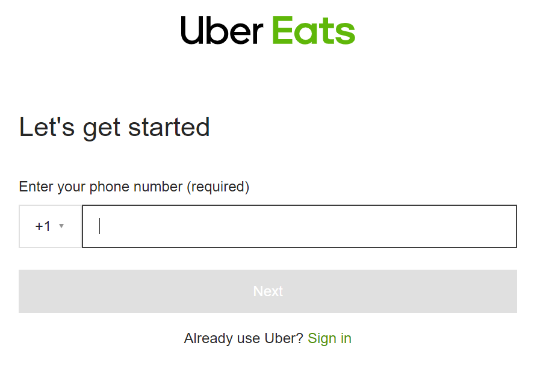

Analyzing UberEats Usability Heuristics
Prat Budhiraja
1. Visibility of system status
As soon as you enter the name of your destination, Uber tells you the number of drivers in your vicinity. In the end, it shows you your ride and ETA, along with the driver’s information. The users must always know where they are, what are they doing and what is the result of the action they took, through appropriate feedback within a reasonable time.
2. Match between system and real world
The use of familiar words, concepts, and phrases make the adoption easy. This holds true not just for the use of language but also in the visual elements like typography, color, and icons.
3. User control and freedom
The user can change the delivery address at any point in the process, and they always have the option to reach out to the delivery driver if they want to make a change to their order.
4. Consistency and standards
UberEats follows the color scheme of the ridesharing Uber platform and includes only the most essential information necessary, ensuring the screen is not cluttered.
5. Error prevention

If you type an incorrect card number that does not meet the Luhn algorithm (checksum formula to validate card numbers), the system will prevent you from submitting your information and it will tell you it is an invalid credit card number.
6. Recognition rather than recall
Recently viewed restaurants and food choices have been saved, so when a user searches for something, they are given recommendations based on viewing history while they input a search.
7. Flexibility and efficiency of use
The UberEats iOS application shares spaces with two other programs: Uber ridesharing and a feature where you can rent a scooter. This maximizes efficiency as the user does not have to download three separate applications, and rather can do all three in one app.
8. Aesthetic and minimalist design
UberEats follows the color scheme of the ridesharing Uber platform and includes only the most essential information necessary, ensuring the screen is not cluttered.
9. Help users recognize, diagnose, and recover from errors
If you type an incorrect card number that does not meet the Luhn algorithm (checksum formula to validate card numbers), the system will prevent you from submitting your information and it will tell you it is an invalid credit card number.
10. Help and documentation
The platform provides a support forum and FAQs where users can check previously resolved situations and answers to common questions in case they are struggling to complete something or need any assistance. Also, there is a support team of real people that are able to help out with orders in real-time.